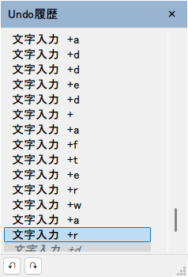

Undo履歴パネル
Paint.NETの「履歴」パネルのように、Undo/Redoの操作履歴を一覧表示し、任意の時点をクリックするだけでそこまでまとめてジャンプできる、常時表示のフローティングパネルの設計記録。ウィンドウ実装方式を1度全面的にやり直した経緯、そこから抽出した再利用可能なCBorderlessWnd基底クラス、実機検証で見つけた実バグの記録をまとめる。

設計方針
常時表示のタイトル付きリサイズ可能フローティングパネルとして、Undo/Redoの操作履歴を一覧表示する。トグルキーはF5(既存の「再描画」はShift+F5へ退避)。6回のバージョンアップ(Ver.1〜Ver.6)を経ており、途中でウィンドウの実装方式自体を1度全面的にやり直している。
Ver.1はCDialog(true)(タイトルバー・サイズ変更枠付きの可変ダイアログ機構)ベースの通常のモードレスダイアログとして実装した。見た目のタイトルバー・枠を消してボーダーレス化しようとしたところ、CDialog(DLGPROC)自体がこの技法と根本的に相性が悪いことが判明し、Ver.2でCDialog依存を完全にやめて素のCreateWindowEx+自前WNDPROCへ全面的に書き直した。
採用した技法はmelak47/BorderlessWindow方式。WS_CAPTION | WS_THICKFRAMEスタイル自体は保持してOS標準の全辺リサイズ・Aeroスナップ・DWM合成影を活かしつつ、WM_NCCALCSIZE/WM_NCHITTESTを横取りしてOS標準の非クライアント領域の描画だけを消す。
Ver.3で、Undo履歴パネル固有でない部分(非クライアント領域描画・ヒットテスト・アクティブ化抑制・閉じるボタン・DWM影セットアップ・親ウィンドウへの追従等)をwindow/CBorderlessWnd(CWnd派生)へ抽出した。NKMM_UNDO_HISTORY_PANELのガード無しで常にビルド対象になっており、他機能からの再利用を前提にしている。
「中核メカニズム」以降はコードを触る際のリファレンス。「見つけて修正した不具合」は、Ver.1〜Ver.6の一連のコミットを通しで読んで特定した実バグの記録で、Win32のモードレスウィンドウ・オーナー関係・comctl32との付き合い方全般にとっても教訓になる内容を含む。詳細はchangelog/NKMM_UNDO_HISTORY_PANEL.mdを参照。
01CBorderlessWnd
sakura_core/window/CBorderlessWnd.h/.cpp。派生クラスはGetWindowClassName()/GetTitleText()/GetDefaultSize()を実装するだけでボーダーレスウィンドウが得られる。閉じるボタンが必要ならCreateCloseButton()を呼べば、自動的にBS_OWNERDRAWで生成され、描画・クリック時のOnCloseRequested()呼び出しは基底が肩代わりする。LayoutChildren()をオーバーライドすればWM_SIZEのたびに派生クラスの子コントロールを再配置できる(閉じるボタン自身は基底が自動配置する)。
virtual LPCTSTR GetWindowClassName() const = 0; // ウィンドウクラス名(プロセス内で一意)
virtual LPCTSTR GetTitleText() const = 0; // タイトル帯に表示する文字列
virtual void GetDefaultSize( int& nWidth, int& nHeight ) const = 0; // 初回表示時の既定サイズ
virtual void LayoutChildren(){} // WM_SIZEのたびに呼ばれる
virtual void OnCloseRequested(){ ::DestroyWindow( GetHwnd() ); } // 既定は::DestroyWindow()非クライアント領域の描画抑制はWM_NCCALCSIZE(クライアント矩形を提案された「ウィンドウ矩形そのまま」にしてキャプション・枠の描画領域を確保させない)とWM_NCHITTEST(外周はリサイズ判定、タイトル帯はHTCAPTION)を横取りすることで実現している。見た目のタイトル帯(色付き背景+タイトル文字+閉じるボタン)は自前描画だが、ドラッグ移動はOS標準のHTCAPTIONドラッグそのものに任せているため、自前でドラッグループを回す必要が無い。タイトル帯の配色は決め打ちにせずGetSysColor(COLOR_ACTIVECAPTION)等を都度問い合わせており、Windowsの「タイトルバーにアクセントカラーを表示する」設定に自動追従する(既存のCDlgFuncListのドッキング時タイトル描画も同じ色を使っており、決め打ちの独自色ではない)。
最大化時の保険として、WM_NCCALCSIZEでクライアント矩形をウィンドウ矩形のまま返す実装だと万一最大化された場合にウィンドウ矩形自体がモニタ外(タスクバーの下)まで含んでしまうため、IsZoomed()相当の判定でモニタの作業領域に補正する処理も入れている。
CBorderlessWndはコードコメント上も「他機能でも再利用できるように」と明記されている。CDlgHistoryPanel専用の機構ではなく、機能フラグのガード無しで常にコンパイル対象になっている点に注意。
02パネルUI・データモデル
sakura_core/dlg/CDlgHistoryPanel.h/.cppがCBorderlessWndを継承するパネル本体。一覧(SysListView32)に操作名と、実際に挿入/削除された文字列の先頭部分を1行にまとめたプレビューを表示し、元に戻す/やり直しのボタンを備える。
プレビュー文字列の専用領域
COpeのUndo/Redoは「今ドキュメントに実データが無い側」だけを保持するping-pong方式(Undo/Redoが実際にその方向へ適用された直後にclear()される)のため、そのまま読むと「一度もUndoされていない」ブロックや「一括Undoでスキップされた"間"のRedo待ちブロック」のプレビューが空になってしまう。対策としてCOpe::cmemHistoryPreviewIns/cmemHistoryPreviewDelという専用領域を設け、InsertData_CEditView/DeleteData2/ReplaceData_CEditView3が生成時に一度だけ独立してコピーしておく方式にした。
任意時点へのジャンプ
行クリックでExecuteJump()がCommand_UNDO/Command_REDOをN回ループ呼び出しし、目的の時点までまとめてジャンプする。この経路はcomctl32再入クラッシュと複数ステップ時の描画不整合という2件の実バグを生んだ(見つけて修正した不具合参照)。
一覧の見た目
ホバー行・現在位置行の描画は、単色反転ではなくCDlgCommandPaletteと同じ"Explorer::ListView"テーマ(LISS_SELECTED/LISS_HOT)による半透明の選択色を使う(テーマ非対応環境ではCOLOR_HIGHLIGHTの単色反転にフォールバック)。ホバー追跡のため一覧(SysListView32)自体をサブクラス化している。
Undo/Redoとの連動
Command_UNDO()/Command_REDO()の末尾でパネルが開いていればCDlgHistoryPanel::OnUndoStackChanged()を呼び、一覧を再構築する。編集操作自体(InsertData_CEditView等)側にはパネルの有無に関する分岐は無く、Undo/Redoバッファへの記録(COpeBuf)はパネルの有無に関係なく常に行われる。
03表示/非表示の同期
| トリガ | 挙動 |
|---|---|
F5(Command_SHOWUNDOHISTORYPANEL) | inim_bDispUNDOHISTORYPANELを反転させCEditWnd::LayoutUndoHistoryPanel()を呼ぶ。表示時はm_cDlgHistoryPanel.DoModeless(...)で生成、非表示時は::DestroyWindow()する(CEditWndのメンバーとしてのCDlgHistoryPanelオブジェクト自体は破棄されず、ウィンドウハンドルだけが作り直される) |
| タブ切替 | 既存のShowOwnedPopups()ベースの仕組み(オーナーウィンドウ経由)にそのまま乗る。Ver.1の「オーナー誤補正バグ」修正後に正しく動作する |
| 本体の最小化/復元 | FollowParentWindow()(CEditWnd::DispatchEvent()のウィンドウ移動/サイズ変更時に呼ばれる)で追従し、最小化中は位置を動かさず非表示相当にする |
| タブ内のペイン切替 | ChangeView()で対象CEditViewを差し替えて一覧を再構築する |
全ウィンドウへはMYWM_BAR_CHANGE_NOTIFY(MYBCN_UNDOHISTORY)を通知する。これは他のバー表示/非表示コマンドと同じ流儀。
04位置・サイズの決定
CBorderlessWnd::ComputeBottomRightPosition()/FollowParentWindow()/m_nWidth・m_nHeight/m_nOffsetX・m_nOffsetYを実際に読んで確認した、最終的な設計は次の通り。
サイズ
初回表示時は既定値(GetDefaultSize()。Ver.1のダイアログテンプレート初期サイズの縦横それぞれ半分に近い、コンパクトな値)。以後はCBorderlessWndのメンバーm_nWidth/m_nHeightにユーザーがリサイズした値が記憶される。このメンバーはCDlgHistoryPanelオブジェクト自体(CEditWndのメンバー変数)が生きている間保持されるため、F5でパネルのウィンドウハンドルを破棄→再生成しても、同一セッション中は直前のサイズが維持される。ウィンドウを閉じてプロセス(タブ)を終了すれば記憶は消える(iniへの永続化は無い)。
位置 — オフセット追従方式
初回表示時はComputeBottomRightPosition()で親ウィンドウ(エディタ本体)の右下(20pxマージン)に配置する。以後の追従は毎回この位置へスナップし直すのではなく、パネル自身のWM_MOVE(ユーザーがタイトル帯をドラッグした場合を含む)のたびに親ウィンドウとの相対オフセット(m_nOffsetX/m_nOffsetY)を記録し直し、FollowParentWindow()はそのオフセットを保ったまま平行移動する、という「ユーザーがドラッグした位置を尊重する」相対追従方式になっている。code_folding系の機能で使われるSetPlaceOfWindow(DLGPLACE_xx)方式(毎回固定位置に再計算)とは異なる点に注意。
Ver.4で、ComputeBottomRightPosition()にGetParentHwnd()(=CWndのm_hwndParent)を直接読ませていたところ、CreateBorderlessWindow()内での最初の呼び出し時点ではまだCreate()を呼んでおらずm_hwndParentがNULLのままで、結果が毎回モニタ左上(0,0)にクランプされてしまう実バグが見つかった。呼び出し側からhwndParentを明示的に渡す形に修正した。
起動直後の「前回の表示状態を復元する」経路(CEditWnd::Create()の子ウィンドウ生成中)では本体ウィンドウ自身がまだ最終的な位置・大きさになっていないことがあり、その時点の親矩形を基準に計算した既定位置のままオフセット追従を続けると、本体が本当の位置に落ち着いた後もパネルがずれた位置に留まり続ける(「F5を押しても反応が無いように見え、もう一度押すとようやく画面内に現れる」という紛らわしい挙動になる)。m_bNeedsInitialResnapフラグを設け、最初のFollowParentWindow()呼び出しでもう一度その時点の親矩形を取り直して1回だけ位置を補正し直すようにした。
05見つけて修正した不具合
Ver.1〜Ver.6の一連のコミット(9209c7d61、5faff5540、f74677ab3、dfb62427a、0d707cf57、aa3e68b85)を通しで読んで特定した実バグの記録。
CDialog::DoModeless()内部のResolveDialogOwnerWindow()(既存のNKMM_FIX_DIALOG_OWNER機構)は、渡されたhwndParentがその時点で非表示だとGetForegroundWindow()へ「補正」してしまう。タブ切替直後などで本来のオーナー(自分が属するCEditWnd)が一時的に非表示だと、無関係な(別プロセスの可能性もある)前面ウィンドウがオーナーにされ、以後ShowOwnedPopups()によるタブ切替時の自動非表示がそのオーナーには効かず、パネルが元のタブの位置に取り残される実バグ。DoModeless()直後にGWLP_HWNDPARENTを明示的に正しいhwndParentへ上書きすることで対処した。
WM_MOUSEACTIVATEを横取りしてMA_NOACTIVATEを返すだけでは、一覧(SysListView32)が既定のクリック処理内で自分自身へ::SetFocus()する際にトップレベルウィンドウを暗黙にアクティブ化してしまう問題が残った。WS_EX_NOACTIVATEを追加で立てることで解消。ボタン(元に戻す/やり直し)側は、非アクティブ状態からの最初のクリックが「アクティブ化だけ」で消費されBN_CLICKEDまで届かない問題があり、WM_MOUSEACTIVATEの時点でボタン上かを判定してBN_CLICKEDを合成する手当てを行った(この手当て自体はVer.2の全面書き直しで別方式に置き換わっている)。
位置・サイズの決定で前述した2件。m_hwndParent未設定時点での参照によるモニタ左上へのクランプと、本体位置確定前の既定位置計算によるずれの2つで、いずれも実機で発見・修正された。
一覧(SysListView32)のNM_CLICKハンドラの中で同期的にExecuteJump()〜RefreshList()(ListView_SetItemCount/SetItemState等)を呼ぶと、まだ処理中のSysListView32自身のWM_LBUTTONUPコールスタック上に再入することになり、comctl32内部でクラッシュ/ハングした。対処としてMYWM_HISTORYPANEL_JUMP(WM_APP+228)を新設し、NM_CLICKハンドラではPostMessage()するだけに留め、実際のジャンプ処理は通知処理が完全に戻り切った後の別メッセージ(DispatchEvent_WM_APP)側で実行するようにした。
Command_UNDO/REDO内部の再描画は「その1ステップ単独でキャレット行・折り返しが変わったか」という条件で全体再描画(Call_OnPaint)するかどうかを決めている(CViewCommander_Edit.cpp)。複数ステップをまとめて飛ぶ場合、途中のステップは描画を止めた状態で実行され、最後の1ステップがその条件に当てはまらないと、データは正しく更新されているのに画面だけが古いまま、という表示不整合が発生した。ループ後に2ステップ以上飛ばした場合は無条件でm_pcView->RedrawAll()するよう修正した。
auto_sprintf()のツールチップ組み立てで発生した実クラッシュauto_sprintf_s()がMSVC>=1400ではtchar_snprintf_s()経由でtchar_vsprintf_s_imp()に落ちるが、これは%sフィールドがバッファに収まらない場合に切り詰めず_invalid_parameter_internal()/_invoke_watson()でプロセスを異常終了させる実装だった(snprintfという名前にもかかわらずvsnprintf相当の安全な切り詰めになっていない既存コードの罠)。プレビュー文字列は最大240文字程度になり得るため確実にこの罠を踏んでいた。修正はprintf系を使わず、必ず切り詰められるlstrcpyn()とCNativeW::AppendString(ptr,len)だけで文字列を組み立てる方式に変更した。
詳細な経緯・コミット単位の記述はchangelog/NKMM_UNDO_HISTORY_PANEL.mdを参照。
06既知の制約/未検証項目
- 実際のマウスドラッグによるリサイズ・タイトル帯ドラッグ移動そのものが「クリーンに動く」ことをGUI操作で最終検証した記録は無い(位置・サイズ計算ロジックの実バグ修正はいずれも実機で発見されたと明記されているため、少なくとも一部操作は行われているが、リサイズ・ドラッグの全パターンを網羅的になぞった記録は無い)。
- 最大化時のモニタ作業領域補正ロジックは、このパネルには最大化ボタンが無く
Win+↑等の間接的な最大化要求への保険として入れられたものであり、実際に最大化させて確認した記述は無い。 - 一連の変更のフルビルド結果(0エラー・0警告等)がコミットログ上に明記されているものは見当たらない。
- ウィンドウを閉じてプロセス(タブ)を終了すればサイズの記憶は消える(iniへの永続化は無い)。
実際にユーザーの手元でF5トグル・行クリックによるジャンプ・リサイズ・タブ切替・最小化復元の一連の操作を試し、問題が無いか確認することが望ましい。
07変更ファイル一覧
sakura_core/dlg/CDlgHistoryPanel.h/.cpp— 新規。パネル本体sakura_core/window/CBorderlessWnd.h/.cpp— 新規。ボーダーレスウィンドウの共通機構(Ver.3で抽出、機能フラグ無しで常時ビルド)sakura_core/my_config.h—NKMM_UNDO_HISTORY_PANELフラグ本体の定義sakura_core/Funccode_x.hsrc—F_SHOWUNDOHISTORYPANELを追加sakura_core/func/Funccode.cpp— コマンド一覧・ヘルプID・IsFuncEnable()への登録sakura_core/func/CKeyBind.cpp—VK_F5をF_REDRAWからF_SHOWUNDOHISTORYPANELに差し替え、F_REDRAWは2列目(Shift+F5相当)へ退避sakura_core/cmd/CViewCommander.h/.cpp—Command_SHOWUNDOHISTORYPANEL()のディスパッチ登録sakura_core/cmd/CViewCommander_Settings.cpp—Command_SHOWUNDOHISTORYPANEL()本体sakura_core/cmd/CViewCommander_Edit.cpp—Command_UNDO()/Command_REDO()末尾でのOnUndoStackChanged()呼び出しsakura_core/window/CEditWnd.h/.cpp—m_cDlgHistoryPanel、LayoutUndoHistoryPanel()、MessageLoop()登録、SetActivePane()/DispatchEvent()連携sakura_core/env/CommonSetting.h/CShareData_IO.cpp— ini設定m_bDispUNDOHISTORYPANELsakura_core/config/system_constants.h—MYWM_HISTORYPANEL_JUMP(WM_APP+228)sakura_core/COpe.h/COpeBlk.h/COpeBuf.h/.cpp— プレビュー文字列の専用領域sakura_core/view/CEditView.cpp/CEditView_Command_New.cpp— プレビュー用文字列のコピー処理resource/MainMenu.ini— ウィンドウメニューに項目(funccode 31339)を追加sakura_core/sakura_rc.h/sakura_rc.rc— 文字列リソース関連(UTF-16LE編集手順に従って編集)docs/sakura_keybind_list.html—F_SHOWUNDOHISTORYPANEL行の追加、F_REDRAW既定キーの更新sakura/sakura.vcxproj/.vcxproj.filters— 新規4ファイルの登録(既にコミット済み、追加対応不要)